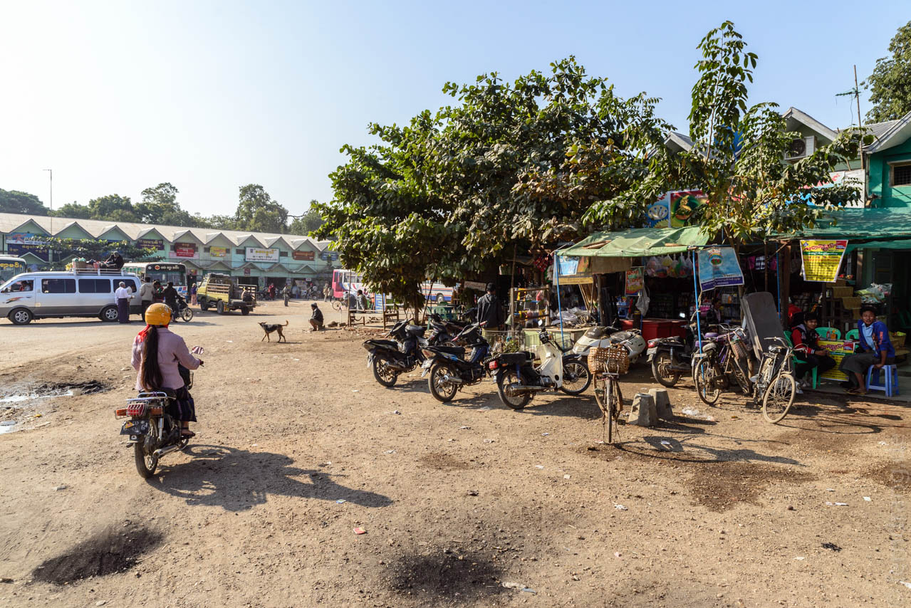
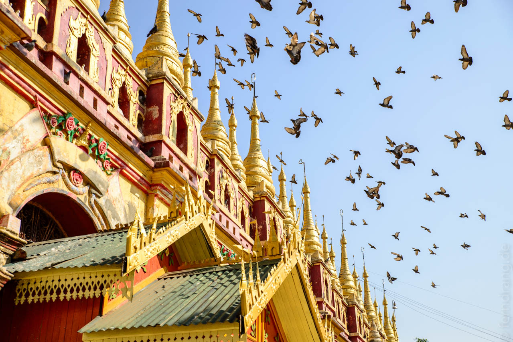
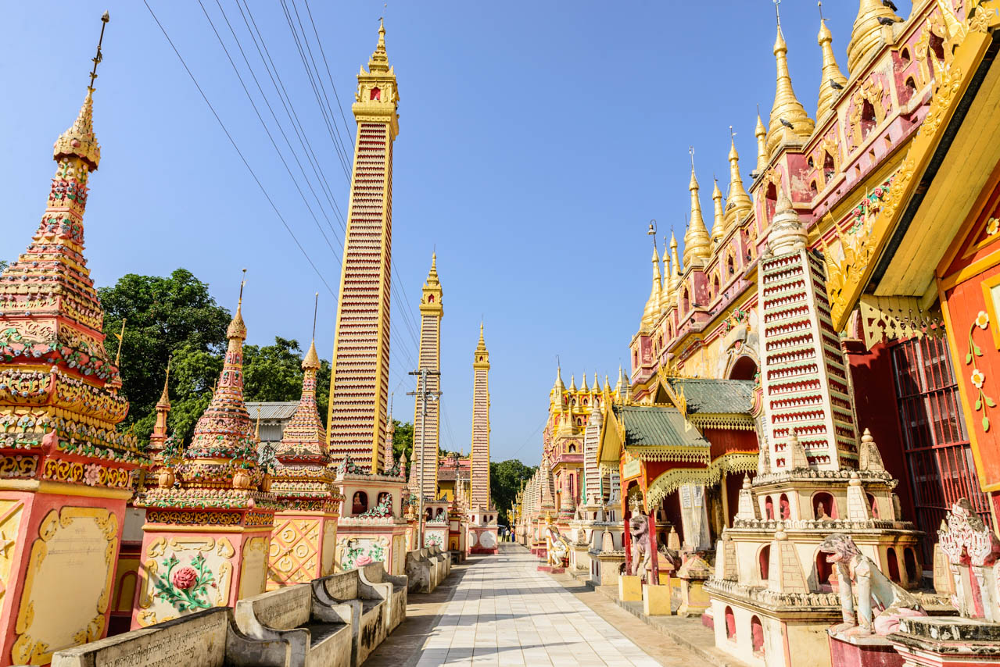
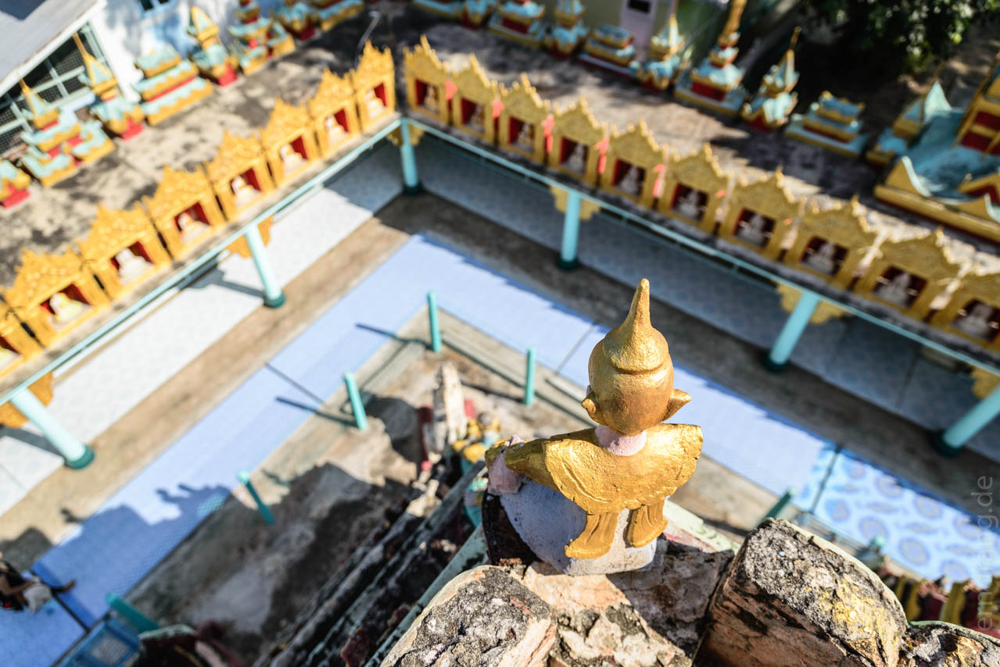
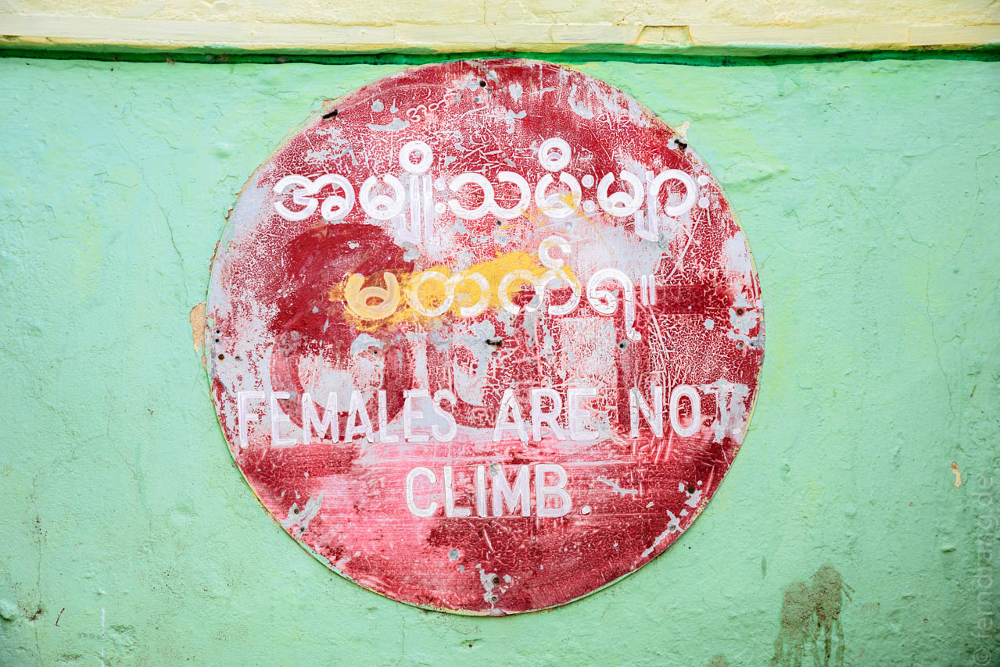
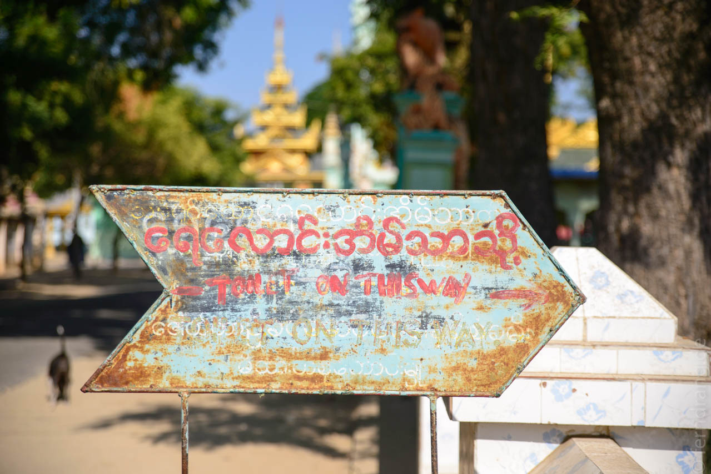
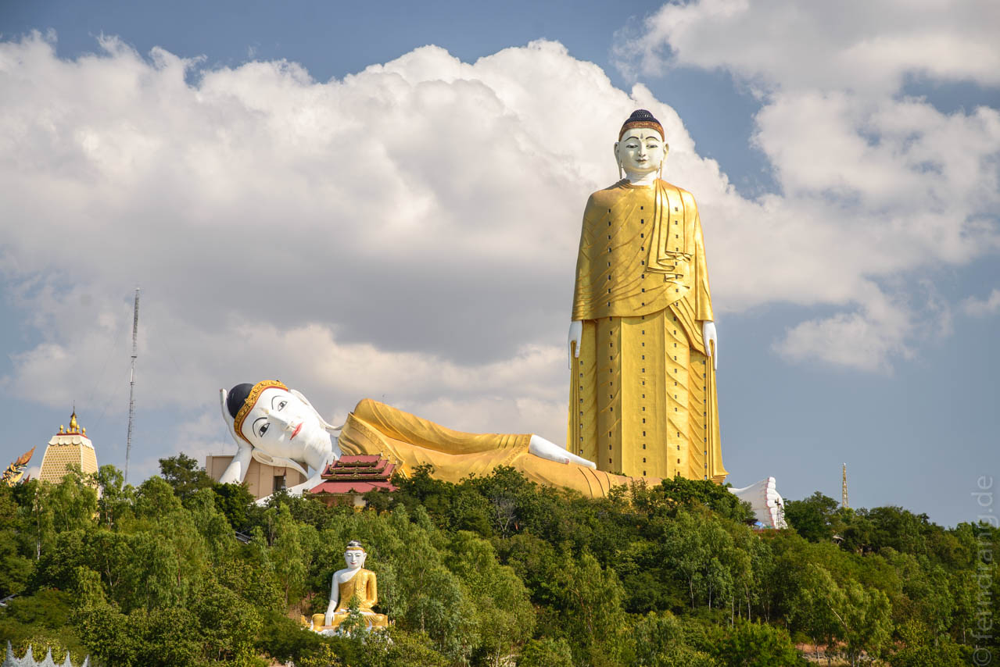
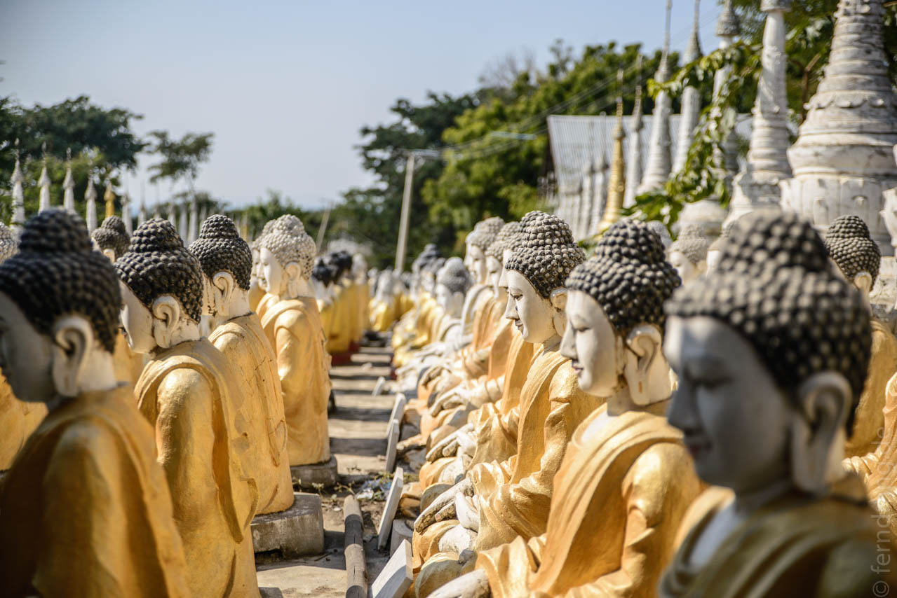

20. Dezember 2013
Monywa
Am nächsten Morgen haben wir uns um 5 Uhr unter den extra Decken hervorgequält, um einen Tagesausflug nach Monywa zu unternehmen. Das Guesthouse hat uns einen Fahrer besorgt, der uns irgendwo im dreckigen und dunklen Zentrum Mandalays in einen Bus gesetzt hat. Die Fahrt hat fast vier Stunden gedauert, obwohl es nur 100 km und ein paar Zerquetschte sind. Der Bus musste nicht nur wie üblich an jeder Ecke halten, sondern die Straßen sind auch schlecht und voll. Es gibt auf der Strecke einige Mautstationen, die echt nach Autobahn aussehen, aber danach geht es genauso weiter wie zuvor.
In Monywa sind wir gar nicht bis ins Zentrum gekommen, sondern im Busbahnhof außerhalb abgeladen worden. Dort waren wir selbst die Attraktion. Von anderen Touristen war keine Spur.
Es ließ sich schnell eine Rikscha-Tour zu den örtlichen Sehenswürdigkeiten organisieren. Wir wollten die zwei berühmten Heiligtümer von Monywa sehen, die beide nicht in Monywa selbst liegen. Die altersschwache Rikscha hatte schwer zu kämpfen. Der erste Stopp war die skurrile Sambuddha Kat Kyaw Pagode, die eigentlich ein kleines verrücktes, heiliges Dorf ist. Hier wurde gleich eine ganze Straße mit verschiedensten Sakralbauten errichtet. Unter anderem gibt es da ein Haus, das fast englisch aussieht und auch einen Uhr-Turm mit Big-Ben-Melodie hat. Das Hauptgebäude ist mit bunten Obelisken geschmückt und enthält tausende von Buddhas, die den gesamten Innenraum bedecken. Die meisten sind nur faustgroß und kämpfen mit den Tauben um die Aussparungen in den Wänden. Auch hier ist alles recht neu und mit einfachsten Mitteln gebaut, aber die Verzierungen sind sehr detailliert und fantasievoll. überhaupt scheinen die Leute hier unsere Vorliebe für Altes nicht zu teilen. Ein neuer Buddha ist besser als ein alter, und warum sollte ein alter Tempel nicht hin und wieder neu gestrichen werden?
    Nicht weit entfernt hat Buddha einen Berghang erobert, wo eine völlig überdrehte Anlage gebaut wurde. Da ist ein hundert Meter langer liegender Buddha, hinter dem der mit 127m höchste stehende Buddha des Landes (Asiens? Der Welt?) hervorlugt. Als hätte das nicht gereicht ist am Fuß des Hügels noch ein Feld mit tausend allerdings nur lebensgroßen sitzenden Buddhas. Viel hilft viel - auch in Glaubensangelegenheiten. Bei so vielen guten Taten, die zweifellos den Spendern aufs Karmakonto gut geschrieben werden, fragt man sich, was die Leute hier so alles auf dem Kerbholz haben.
 Den Weg in die Stadt haben wir uns zugunsten eines preiswerten Mahls am Busbahnhof gespart. Die Wirtin war von der Ehre eines Touristenbesuchs so überwältigt, dass sie uns den ganzen Tisch mit kleinen Schälchen vollgestellt hat. Das meiste lief eher unter "interessant" als unter "köstlich".
Die Rückfahrt war leider genauso lang. Um alles auszunutzen wird auch der Mittelgang mit Ausklappsitzen besetzt. Wenn dann jemand aus der Mitte aussteigen will, wird es entsprechend kompliziert. Zurück in Mandalay haben wir uns in der indischen Ecke, in einer der vielen Straßenküchen, mit köstlichen Chapati-Talis für jeweils 25 Cent belohnt.